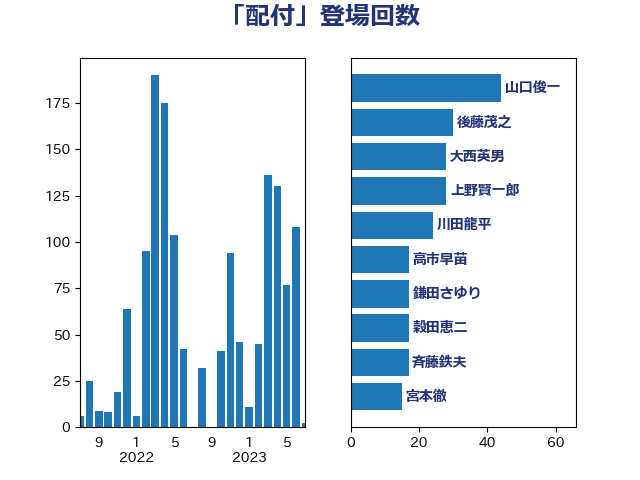

単語「配付」

| 山口俊一 | 自由民主党 | 44 回 |
| 後藤茂之 | 自由民主党 | 30 回 |
| 大西英男 | 自由民主党 | 28 回 |
| 上野賢一郎 | 自由民主党 | 28 回 |
| 川田龍平 | 立憲民主党 | 24 回 |
| 高市早苗 | 自由民主党 | 17 回 |
| 鎌田さゆり | 立憲民主党 | 17 回 |
| 穀田恵二 | 日本共産党 | 17 回 |
| 斉藤鉄夫 | 公明党 | 17 回 |
| 宮本徹 | 日本共産党 | 15 回 |
| 伊藤岳 | 日本共産党 | 15 回 |
| 西村康稔 | 自由民主党 | 14 回 |
| 藤岡隆雄 | 立憲民主党 | 14 回 |
| 鈴木俊一 | 自由民主党 | 13 回 |
| 三ッ林裕巳 | 自由民主党 | 13 回 |
| 岸田文雄 | 自由民主党 | 12 回 |
| 宮本岳志 | 日本共産党 | 12 回 |
| 仁木博文 | 無所属 | 12 回 |
| 金子道仁 | 日本維新の会 | 10 回 |
| 橋本岳 | 自由民主党 | 10 回 |
| 尾辻秀久 | 無所属 | 10 回 |
| 小里泰弘 | 自由民主党 | 10 回 |
| 古川禎久 | 自由民主党 | 10 回 |
| 鬼木誠 | 立憲民主党 | 9 回 |
| 鈴木馨祐 | 自由民主党 | 9 回 |
| 田村智子 | 日本共産党 | 9 回 |
| 平口洋 | 自由民主党 | 9 回 |
| 塩川鉄也 | 日本共産党 | 9 回 |
| 井上哲士 | 日本共産党 | 9 回 |
| 紙智子 | 日本共産党 | 8 回 |
| 田村貴昭 | 日本共産党 | 8 回 |
| 浜田靖一 | 自由民主党 | 8 回 |
| 末松信介 | 自由民主党 | 8 回 |
| 山東昭子 | 自由民主党 | 8 回 |
| 山井和則 | 立憲民主党 | 8 回 |
| 仁比聡平 | 日本共産党 | 8 回 |
| 高良鉄美 | 無所属 | 7 回 |
| 金子恭之 | 自由民主党 | 7 回 |
| 田村まみ | 国民民主党 | 7 回 |
| 森英介 | 自由民主党 | 7 回 |
| 林芳正 | 自由民主党 | 7 回 |
| 小西洋之 | 立憲民主党 | 7 回 |
| 長島昭久 | 自由民主党 | 6 回 |
| 鈴木義弘 | 国民民主党 | 6 回 |
| 竹内譲 | 公明党 | 6 回 |
| 神津たけし | 立憲民主党 | 6 回 |
| 牧義夫 | 立憲民主党 | 6 回 |
| 江藤拓 | 自由民主党 | 6 回 |
| 杉尾秀哉 | 立憲民主党 | 6 回 |
| 木原稔 | 自由民主党 | 6 回 |
| 安江伸夫 | 公明党 | 6 回 |
| 城井崇 | 立憲民主党 | 6 回 |
| 吉川沙織 | 立憲民主党 | 6 回 |
| 古屋範子 | 公明党 | 6 回 |
| 加藤勝信 | 自由民主党 | 6 回 |
| 齋藤健 | 自由民主党 | 5 回 |
| 長谷川淳二 | 自由民主党 | 5 回 |
| 金子恵美 | 立憲民主党 | 5 回 |
| 逢坂誠二 | 立憲民主党 | 5 回 |
| 赤羽一嘉 | 公明党 | 5 回 |
| 義家弘介 | 自由民主党 | 5 回 |
| 湯原俊二 | 立憲民主党 | 5 回 |
| 浮島智子 | 公明党 | 5 回 |
| 浅野哲 | 国民民主党 | 5 回 |
| 川合孝典 | 国民民主党 | 5 回 |
| 伊波洋一 | 無所属 | 5 回 |
| 青柳陽一郎 | 立憲民主党 | 4 回 |
| 酒井庸行 | 自由民主党 | 4 回 |
| 西銘恒三郎 | 自由民主党 | 4 回 |
| 芳賀道也 | 国民民主党 | 4 回 |
| 米山隆一 | 立憲民主党 | 4 回 |
| 空本誠喜 | 日本維新の会 | 4 回 |
| 礒崎哲史 | 国民民主党 | 4 回 |
| 田畑裕明 | 自由民主党 | 4 回 |
| 漆間譲司 | 日本維新の会 | 4 回 |
| 浜口誠 | 国民民主党 | 4 回 |
| 松沢成文 | 日本維新の会 | 4 回 |
| 松本剛明 | 自由民主党 | 4 回 |
| 後藤祐一 | 立憲民主党 | 4 回 |
| 岸真紀子 | 立憲民主党 | 4 回 |
| 山本太郎 | れいわ新選組 | 4 回 |
| 尾身朝子 | 自由民主党 | 4 回 |
| 小野寺五典 | 自由民主党 | 4 回 |
| 小林茂樹 | 自由民主党 | 4 回 |
| 小川淳也 | 立憲民主党 | 4 回 |
| 守島正 | 日本維新の会 | 4 回 |
| 大野敬太郎 | 自由民主党 | 4 回 |
| 大塚拓 | 自由民主党 | 4 回 |
| 塚田一郎 | 自由民主党 | 4 回 |
| 城内実 | 自由民主党 | 4 回 |
| 吉良よし子 | 日本共産党 | 4 回 |
| 吉田宣弘 | 公明党 | 4 回 |
| 古賀千景 | 立憲民主党 | 4 回 |
| 佐藤信秋 | 自由民主党 | 4 回 |
| 井坂信彦 | 立憲民主党 | 4 回 |
| 鶴保庸介 | 自由民主党 | 3 回 |
| 鰐淵洋子 | 公明党 | 3 回 |
| 高見康裕 | 自由民主党 | 3 回 |
| 高木毅 | 自由民主党 | 3 回 |
| 高木かおり | 日本維新の会 | 3 回 |
| 阿部知子 | 立憲民主党 | 3 回 |
| 重徳和彦 | 立憲民主党 | 3 回 |
| 近藤和也 | 立憲民主党 | 3 回 |
| 足立敏之 | 自由民主党 | 3 回 |
| 谷田川元 | 立憲民主党 | 3 回 |
| 西岡秀子 | 国民民主党 | 3 回 |
| 舩後靖彦 | れいわ新選組 | 3 回 |
| 羽田次郎 | 立憲民主党 | 3 回 |
| 美延映夫 | 日本維新の会 | 3 回 |
| 簗和生 | 自由民主党 | 3 回 |
| 福重隆浩 | 公明党 | 3 回 |
| 福島みずほ | 社会民主党 | 3 回 |
| 石橋通宏 | 立憲民主党 | 3 回 |
| 田中良生 | 自由民主党 | 3 回 |
| 田中健 | 国民民主党 | 3 回 |
| 玉木雄一郎 | 国民民主党 | 3 回 |
| 渡辺周 | 立憲民主党 | 3 回 |
| 渡辺創 | 立憲民主党 | 3 回 |
| 浅田均 | 日本維新の会 | 3 回 |
| 沢田良 | 日本維新の会 | 3 回 |
| 永岡桂子 | 自由民主党 | 3 回 |
| 櫻井周 | 立憲民主党 | 3 回 |
| 梅村みずほ | 日本維新の会 | 3 回 |
| 松島みどり | 自由民主党 | 3 回 |
| 朝日健太郎 | 自由民主党 | 3 回 |
| 新藤義孝 | 自由民主党 | 3 回 |
| 平木大作 | 公明党 | 3 回 |
| 岬麻紀 | 日本維新の会 | 3 回 |
| 岡本三成 | 公明党 | 3 回 |
| 山田勝彦 | 立憲民主党 | 3 回 |
| 山下貴司 | 自由民主党 | 3 回 |
| 山下芳生 | 日本共産党 | 3 回 |
| 小野泰輔 | 日本維新の会 | 3 回 |
| 小沼巧 | 立憲民主党 | 3 回 |
| 小沢雅仁 | 立憲民主党 | 3 回 |
| 寺田静 | 無所属 | 3 回 |
| 大河原まさこ | 立憲民主党 | 3 回 |
| 塩村あやか | 立憲民主党 | 3 回 |
| 堀内詔子 | 自由民主党 | 3 回 |
| 吉田とも代 | 日本維新の会 | 3 回 |
| 吉川元 | 立憲民主党 | 3 回 |
| 古賀友一郎 | 自由民主党 | 3 回 |
| 伊藤忠彦 | 自由民主党 | 3 回 |
| 中根一幸 | 自由民主党 | 3 回 |
| 黄川田仁志 | 自由民主党 | 2 回 |
| 高橋千鶴子 | 日本共産党 | 2 回 |
| 高木陽介 | 公明党 | 2 回 |
| 高木真理 | 立憲民主党 | 2 回 |
| 馬淵澄夫 | 立憲民主党 | 2 回 |
| 馬場雄基 | 立憲民主党 | 2 回 |
| 音喜多駿 | 日本維新の会 | 2 回 |
| 階猛 | 立憲民主党 | 2 回 |
| 関芳弘 | 自由民主党 | 2 回 |
| 長妻昭 | 立憲民主党 | 2 回 |
| 野村哲郎 | 自由民主党 | 2 回 |
| 里見隆治 | 公明党 | 2 回 |
| 進藤金日子 | 自由民主党 | 2 回 |
| 豊田俊郎 | 自由民主党 | 2 回 |
| 西村明宏 | 自由民主党 | 2 回 |
| 葉梨康弘 | 自由民主党 | 2 回 |
| 落合貴之 | 立憲民主党 | 2 回 |
| 萩生田光一 | 自由民主党 | 2 回 |
| 菊田真紀子 | 立憲民主党 | 2 回 |
| 舟山康江 | 国民民主党 | 2 回 |
| 舞立昇治 | 自由民主党 | 2 回 |
| 自見はなこ | 自由民主党 | 2 回 |
| 緑川貴士 | 立憲民主党 | 2 回 |
| 笹川博義 | 自由民主党 | 2 回 |
| 竹谷とし子 | 公明党 | 2 回 |
| 竹詰仁 | 国民民主党 | 2 回 |
| 稲田朋美 | 自由民主党 | 2 回 |
| 神田潤一 | 自由民主党 | 2 回 |
| 石田真敏 | 自由民主党 | 2 回 |
| 石川大我 | 立憲民主党 | 2 回 |
| 石垣のりこ | 立憲民主党 | 2 回 |
| 石井苗子 | 日本維新の会 | 2 回 |
| 矢倉克夫 | 公明党 | 2 回 |
| 田嶋要 | 立憲民主党 | 2 回 |
| 牧山ひろえ | 立憲民主党 | 2 回 |
| 滝沢求 | 自由民主党 | 2 回 |
| 源馬謙太郎 | 立憲民主党 | 2 回 |
| 深澤陽一 | 自由民主党 | 2 回 |
| 浜田聡 | NHK党 | 2 回 |
| 泉健太 | 立憲民主党 | 2 回 |
| 江田憲司 | 立憲民主党 | 2 回 |
| 柴愼一 | 立憲民主党 | 2 回 |
| 柘植芳文 | 自由民主党 | 2 回 |
| 松木けんこう | 立憲民主党 | 2 回 |
| 松原仁 | 立憲民主党 | 2 回 |
| 東徹 | 日本維新の会 | 2 回 |
| 杉久武 | 公明党 | 2 回 |
| 有村治子 | 自由民主党 | 2 回 |
| 徳永エリ | 立憲民主党 | 2 回 |
| 川崎ひでと | 自由民主党 | 2 回 |
| 岩谷良平 | 日本維新の会 | 2 回 |
| 山田宏 | 自由民主党 | 2 回 |
| 山添拓 | 日本共産党 | 2 回 |
| 山本順三 | 自由民主党 | 2 回 |
| 山本左近 | 自由民主党 | 2 回 |
| 山口壯 | 自由民主党 | 2 回 |
| 山下雄平 | 自由民主党 | 2 回 |
| 小池晃 | 日本共産党 | 2 回 |
| 寺田稔 | 自由民主党 | 2 回 |
| 宮沢洋一 | 自由民主党 | 2 回 |
| 宮内秀樹 | 自由民主党 | 2 回 |
| 大島敦 | 立憲民主党 | 2 回 |
| 大塚耕平 | 国民民主党 | 2 回 |
| 堤かなめ | 立憲民主党 | 2 回 |
| 堀場幸子 | 日本維新の会 | 2 回 |
| 古賀篤 | 自由民主党 | 2 回 |
| 勝部賢志 | 立憲民主党 | 2 回 |
| 加田裕之 | 自由民主党 | 2 回 |
| 伊藤孝恵 | 国民民主党 | 2 回 |
| 井上貴博 | 自由民主党 | 2 回 |
| 丹羽秀樹 | 自由民主党 | 2 回 |
| 中野英幸 | 自由民主党 | 2 回 |
| 中谷一馬 | 立憲民主党 | 2 回 |
| 中西祐介 | 自由民主党 | 2 回 |
| 中曽根弘文 | 自由民主党 | 2 回 |
| 中川康洋 | 公明党 | 2 回 |
| 中島克仁 | 立憲民主党 | 2 回 |
| 上田清司 | 国民民主党 | 2 回 |
| 三木圭恵 | 日本維新の会 | 2 回 |
| たがや亮 | れいわ新選組 | 2 回 |
| 鳩山二郎 | 自由民主党 | 1 回 |
| 須藤元気 | 無所属 | 1 回 |
| 青木愛 | 立憲民主党 | 1 回 |
| 青山繁晴 | 自由民主党 | 1 回 |
| 青山大人 | 立憲民主党 | 1 回 |
| 阿部司 | 日本維新の会 | 1 回 |
| 長谷川岳 | 自由民主党 | 1 回 |
| 長友慎治 | 国民民主党 | 1 回 |
| 鈴木宗男 | 日本維新の会 | 1 回 |
| 野田国義 | 立憲民主党 | 1 回 |
| 遠藤良太 | 日本維新の会 | 1 回 |
| 赤澤亮正 | 自由民主党 | 1 回 |
| 赤木正幸 | 日本維新の会 | 1 回 |
| 赤嶺政賢 | 日本共産党 | 1 回 |
| 谷川とむ | 自由民主党 | 1 回 |
| 谷合正明 | 公明党 | 1 回 |
| 西野太亮 | 自由民主党 | 1 回 |
| 西田実仁 | 公明党 | 1 回 |
| 西村智奈美 | 立憲民主党 | 1 回 |
| 藤川政人 | 自由民主党 | 1 回 |
| 蓮舫 | 立憲民主党 | 1 回 |
| 菅義偉 | 自由民主党 | 1 回 |
| 臼井正一 | 自由民主党 | 1 回 |
| 細田博之 | 自由民主党 | 1 回 |
| 篠原孝 | 立憲民主党 | 1 回 |
| 笠浩史 | 無所属 | 1 回 |
| 稲津久 | 公明党 | 1 回 |
| 稲富修二 | 立憲民主党 | 1 回 |
| 秋本真利 | 無所属 | 1 回 |
| 福山哲郎 | 立憲民主党 | 1 回 |
| 神田憲次 | 自由民主党 | 1 回 |
| 石原正敬 | 自由民主党 | 1 回 |
| 石井章 | 日本維新の会 | 1 回 |
| 石井準一 | 自由民主党 | 1 回 |
| 畦元将吾 | 自由民主党 | 1 回 |
| 田村憲久 | 自由民主党 | 1 回 |
| 田名部匡代 | 立憲民主党 | 1 回 |
| 猪口邦子 | 自由民主党 | 1 回 |
| 牧島かれん | 自由民主党 | 1 回 |
| 滝波宏文 | 自由民主党 | 1 回 |
| 渡辺猛之 | 自由民主党 | 1 回 |
| 浜地雅一 | 公明党 | 1 回 |
| 浅尾慶一郎 | 自由民主党 | 1 回 |
| 津島淳 | 自由民主党 | 1 回 |
| 河野太郎 | 自由民主党 | 1 回 |
| 河西宏一 | 公明党 | 1 回 |
| 池下卓 | 日本維新の会 | 1 回 |
| 武村展英 | 自由民主党 | 1 回 |
| 武井俊輔 | 自由民主党 | 1 回 |
| 横沢高徳 | 立憲民主党 | 1 回 |
| 榛葉賀津也 | 国民民主党 | 1 回 |
| 森山浩行 | 立憲民主党 | 1 回 |
| 根本匠 | 自由民主党 | 1 回 |
| 柿沢未途 | 無所属 | 1 回 |
| 松野博一 | 自由民主党 | 1 回 |
| 松本尚 | 自由民主党 | 1 回 |
| 松川るい | 自由民主党 | 1 回 |
| 本庄知史 | 立憲民主党 | 1 回 |
| 早坂敦 | 日本維新の会 | 1 回 |
| 新妻秀規 | 公明党 | 1 回 |
| 平林晃 | 公明党 | 1 回 |
| 市村浩一郎 | 日本維新の会 | 1 回 |
| 島村大 | 自由民主党 | 1 回 |
| 岩渕友 | 日本共産党 | 1 回 |
| 岡本あき子 | 立憲民主党 | 1 回 |
| 山際大志郎 | 自由民主党 | 1 回 |
| 山田賢司 | 自由民主党 | 1 回 |
| 山田太郎 | 自由民主党 | 1 回 |
| 山本香苗 | 公明党 | 1 回 |
| 山崎誠 | 立憲民主党 | 1 回 |
| 山崎正恭 | 公明党 | 1 回 |
| 山岡達丸 | 立憲民主党 | 1 回 |
| 小林鷹之 | 自由民主党 | 1 回 |
| 小宮山泰子 | 立憲民主党 | 1 回 |
| 小倉將信 | 自由民主党 | 1 回 |
| 奥野総一郎 | 立憲民主党 | 1 回 |
| 奥下剛光 | 日本維新の会 | 1 回 |
| 天畠大輔 | れいわ新選組 | 1 回 |
| 大西健介 | 立憲民主党 | 1 回 |
| 大石あきこ | れいわ新選組 | 1 回 |
| 坂本祐之輔 | 立憲民主党 | 1 回 |
| 原口一博 | 立憲民主党 | 1 回 |
| 北神圭朗 | 無所属 | 1 回 |
| 務台俊介 | 自由民主党 | 1 回 |
| 倉林明子 | 日本共産党 | 1 回 |
| 佐藤英道 | 公明党 | 1 回 |
| 佐々木紀 | 自由民主党 | 1 回 |
| 佐々木さやか | 公明党 | 1 回 |
| 伊東信久 | 日本維新の会 | 1 回 |
| 伊佐進一 | 公明党 | 1 回 |
| 今井絵理子 | 自由民主党 | 1 回 |
| 井野俊郎 | 自由民主党 | 1 回 |
| 亀岡偉民 | 自由民主党 | 1 回 |
| 中条きよし | 日本維新の会 | 1 回 |
| 下条みつ | 立憲民主党 | 1 回 |
| 上杉謙太郎 | 自由民主党 | 1 回 |
| 三浦靖 | 自由民主党 | 1 回 |
| 三浦信祐 | 公明党 | 1 回 |
| 三宅伸吾 | 自由民主党 | 1 回 |
| こやり隆史 | 自由民主党 | 1 回 |
| おおつき紅葉 | 立憲民主党 | 1 回 |